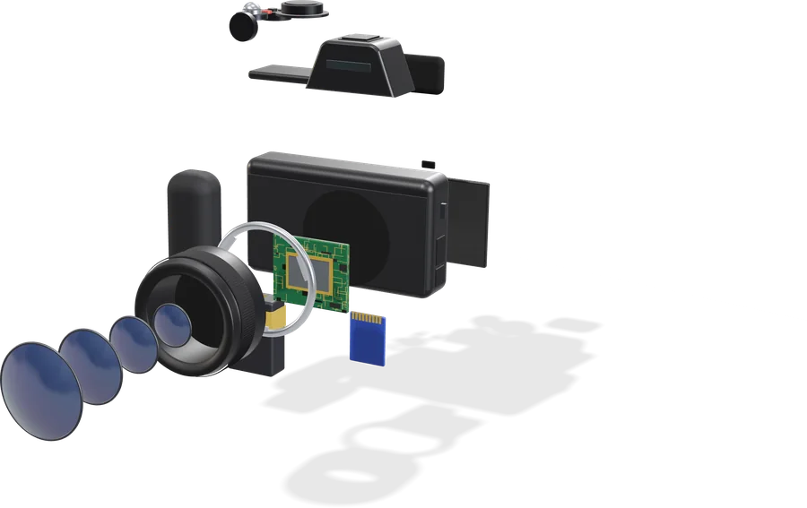
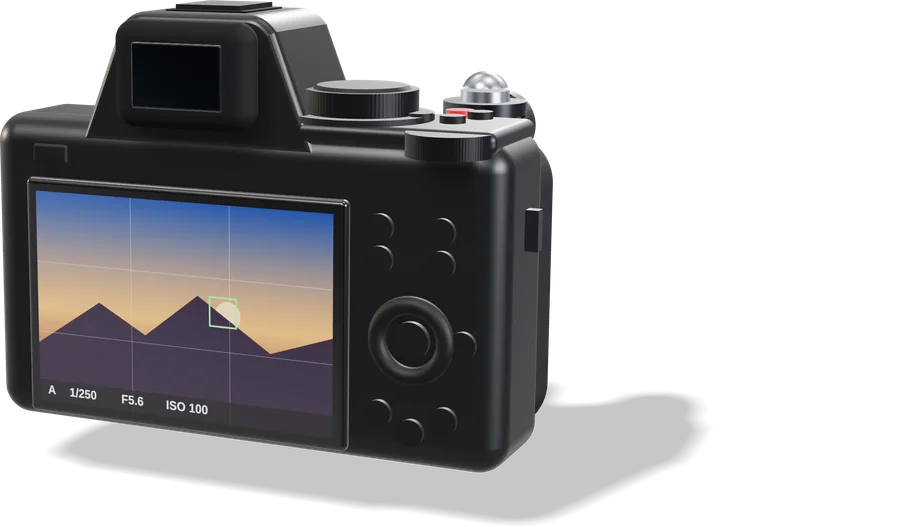
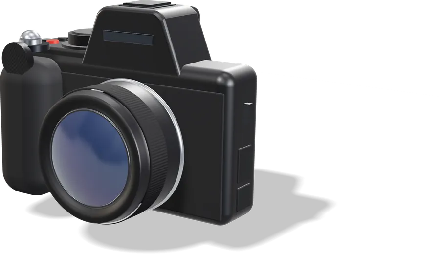

Ton parcours
Que veux-tu faire ?
Six étapes courtes. Commence par la première, ou va directement à ce dont tu as besoin.
0 / 6 étapes
Vu ✓1 · 3 min
Découvrir mon appareil
La vue éclatée, puis chaque bouton.
Explorer
Vu ✓2 · 10 minApprendre à t'en servir
Dans l'appareil simulé : on te dit quelle commande presser.
Essayer
Vu ✓3 · 15 minApprendre la photo en jouant
Lumière, modes, netteté, couleur.
Jouer Vu ✓4 · à la demandeJe photographie…
Une situation, les bons réglages.
Choisir Vu ✓5 · 5 minFilmer en 4K
Les réglages vidéo qui comptent.
Filmer Vu ✓6 · à la demandeJ'ai un problème
Dépannage, fiche technique, lexique.
Trouver
20,9millions de pixels, capteur DX
11images par seconde (15 en silencieux)
209points de mise au point
4Kvidéo jusqu'à 60 images/s
Gratuit · sans compte · sans publicité · sans cookie · chaque réglage vérifié dans le manuel officiel Nikon.